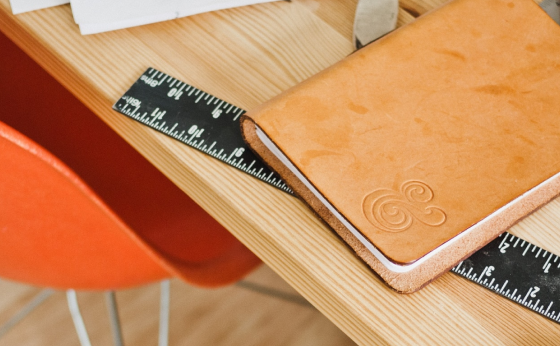

<!DOCTYPE html>
<html lang="en">

<head>
    <meta charset="UTF-8">
    <meta name="viewport" content="width=device-width, initial-scale=1.0">
    <title>WebCreator Blog</title>
    <link rel="stylesheet" href="css/work06.css">
</head>

<body>
    <div class="wrapper">
        <header>
            <h1>WebCreator Blog</h1>
        </header>
        <nav>
            <ul>
                <li><a href="#"> linklistA</a></li>
                <li><a href="#"> linklistB</a></li>
                <li><a href="#"> linklistC</a></li>
                <li><a href="#"> linklistD</a></li>
                <li><a href="#"> linklistE</a></li>

            </ul>
        </nav>
        <main>
            <div class="content">
                <article class="art1">
                    <figure></figure>
                    <h2 class="topicTtl">MacBookProに入れたいアプリおすすめ20</h2>
                    <time datetime="2100-01-02">2100.01.02</time>
                    <p>制作や日頃の業務の中で使いたいMacBookProで便利なアプリ20個を一気に紹介します。今回は、SNSでも人気なWebクリエイターの方々からアンケートを使って、本当に使えるアプリ20個を厳選してきました。
                        特にWeb制作でなかなか業務がはかどらない人には目から鱗のアプリばかり紹介しています。</p>
                </article>
                <article class="art2">
                    <figure></figure>
                    <h2 class="topicTtl">制作疲れをぐっと癒やす飲み物特集</h2>
                    <time datetime="2099.12.20"> 2099.12.20</time>
                    <p>集中力が切れそうな時や、あともうひと踏ん張り頑張りたい時のパソコンのお供のドリンク特集です。エナジードリンクも良いけれど糖分が気になる、味が好きじゃないなど
                        多方面のクリエイターから、ここぞの一杯を沢山聞いてきましたので、今回は特にその中でも人気の5つを紹介します。</p>
                </article>
                <article class="art3">
                    <figure></figure>
                    <h2 class="topicTtl">Windowsでも可能？クリエイティブツール紹介</h2>
                    <time datetime="2099.12.02">2099.12.02</time>
                    <p>ゲームだけじゃない。クリエイティブツールをWindowsでもMacと同様に扱える沢山のアプリをご紹介。</p>
                </article>

                <article class="art4">
                    <figure></figure>
                    <h2 class="topicTtl">デザイナーの鞄開けてみた</h2>
                    <time datetime="2099.11.20">2099.11.20</time>
                    <p>EECライターのチーモモです。今回は、弊社デザイナーのダーヤマ君の鞄を勝手に開けて、普段の荷物の中身を 全て公開します。</p><br>
                    ※写真はイメージです
                </article>
                <article class="art5">
                    <figure></figure>

                    <h2 class="topicTtl">Tab派?スペース派?インデント集計結果</h2>
                    <time datetime="2099.11.05"> 2099.11.05</time>
                    <p>エンジニアチームがいつも喧嘩をするスペース・タブ派アンケート、今回は社内全エンジニアに 集計を取り、多数派はどちらか決定しました。前回の聞き取り調査では、タブ派の声がとても多かったのですが
                        社内全体の数値はどうなっているのでしょうか。</p>
                </article>

                <article class="art6">
                    <figure></figure>
                    <h2 class="topicTtl">MacBookProに入れたいアプリおすすめ20</h2>
                    <time datetime="2100-01-02">2100.01.02</time>
                    <p>制作や日頃の業務の中で使いたいMacBookProで便利なアプリ20個を一気に紹介します。今回は、SNSでも人気なWebクリエイターの方々からアンケートを使って、本当に使えるアプリ20個を厳選してきました。
                        特にWeb制作でなかなか業務がはかどらない人には目から鱗のアプリばかり紹介しています。</p>
                </article>
                <article class="art7">
                    <figure></figure>
                    <h2 class="topicTtl">制作疲れをぐっと癒やす飲み物特集</h2>
                    <time datetime="2099.12.20"> 2099.12.20</time>
                    <p>集中力が切れそうな時や、あともうひと踏ん張り頑張りたい時のパソコンのお供のドリンク特集です。エナジードリンクも良いけれど糖分が気になる、味が好きじゃないなど
                        多方面のクリエイターから、ここぞの一杯を沢山聞いてきましたので、今回は特にその中でも人気の5つを紹介します。</p>
                </article>
                <article class="art8">
                    <figure></figure>
                    <h2 class="topicTtl">Windowsでも可能？クリエイティブツール紹介</h2>
                    <time datetime="2099.12.02">2099.12.02</time>
                    <p>ゲームだけじゃない。クリエイティブツールをWindowsでもMacと同様に扱える沢山のアプリをご紹介。</p>
                </article>

                <article class="art9">
                    <figure></figure>
                    <h2 class="topicTtl">デザイナーの鞄開けてみた</h2>
                    <time datetime="2099.11.20">2099.11.20</time>
                    <p>EECライターのチーモモです。今回は、弊社デザイナーのダーヤマ君の鞄を勝手に開けて、普段の荷物の中身を 全て公開します。</p><br>
                    ※写真はイメージです
                </article>
                <article class="art10">
                    <figure></figure>

                    <h2 class="topicTtl">Tab派?スペース派?インデント集計結果</h2>
                    <time datetime="2099.11.05"> 2099.11.05</time>
                    <p>エンジニアチームがいつも喧嘩をするスペース・タブ派アンケート、今回は社内全エンジニアに 集計を取り、多数派はどちらか決定しました。前回の聞き取り調査では、タブ派の声がとても多かったのですが
                        社内全体の数値はどうなっているのでしょうか。</p>
                </article>
            </div>
        </main>
        <footer>
            <p><small> copyright &copy; comp ecccomp.Inc</small></p>
        </footer>
    </div>
</body>

</html>